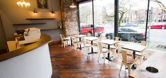
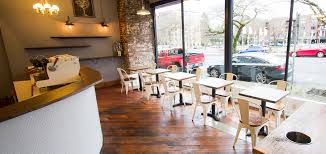

Dark Roast Reciepe
When you drink a cup of the Shaw blend, you know you’re drinking coffee. With flavors like cocoa and dark fruit, its vibrant intensity gets right in your face and stands up to whatever you want to put in it--milk, sugar, cream, you name it.

 
